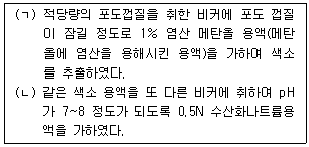
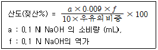
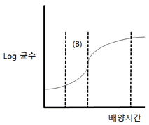

식품산업기사 (2017-08-26 기출문제)
1과목: 식품위생학
1. 쥐에 의해 생길 수 있는 병과 그 원인의 연결이 틀린 것은?
- Weil씨병 : 쥐의 오줌으로부터 감염
- 서교증 : 쥐에게 물려서 감염
- 유행성출혈열 : 쥐의 분변에 의한 감염
- kwashiorkor : 쥐벼룩에 의한 감염
(정답률: 77%)

2. 식품에 항생물질이 잔류할 때 일어날 수 있는 문제점과 거리가 먼 것은?
- 알레르기 증상의 발현
- 항생제 내성균의 출현
- 급성중독으로 인한 식중독 발생
- 감염증의 변모
(정답률: 78%)
3. 식품 등의 표시에 대한 설명으로 틀린 것은?
- 유통기한은 소비자에게 판매가 허용되는 기한을 말한다.
- 소분판매하는 제품은 소분가공을 한 날이 제조연월일이다.
- 품질유지기한은 식품의 특성에 맞는 적절한 보존방법이나 기준에 따라 보관할 경우 해당식품 고유의 품질이 유지될 수 있는 기한이다.
- 제조연월일은 포장을 제외한 더 이상의 제조나 가공이 필요하지 아니한 시점이다.
(정답률: 82%)
4. 안식향산에 대한 설명으로 틀린 것은?
- 분자식은 C8H6O2 이다.
- 벤조산이라고 불리는 식품 보존료이다.
- pH 4.5 이하에서 항균효과가 강하다.
- 간장의 사용 기준은 0.6g/Kg 이하이다.
(정답률: 60%)
5. 미강유의 탈취공정에서 열매개체로 사용된 물질이 혼입된 미강유를 먹고 나타난 중독증상은?
- 이타이 이타이 병
- 미나마타 병
- PCB(Poly Chloride biphenyl) 중독
- 황변미 중독
(정답률: 81%)
6. 합성착색료에 해당하지 않는 것은?
- 식용색소녹색 제3호
- 카르민
- 삼이산화철
- 소르빈산
(정답률: 78%)
7. 건강기능식품 제조에 사용할 수 있는 원료는?
- 황백(黃栢)
- 농축인삼류
- 담즙·담낭
- 사람의 태반
(정답률: 91%)
8. 식품첨가물로 고시하기 위한 검토사항이 아닌 것은?
- 생리활성 기능이 확실한 것
- 화학명과 제조방법이 확실한 것
- 식품에 사용할 때 충분히 효과가 있는 것
- 통례의 사용방법에 의해 인체에 대한 안전성이 확보되는 것
(정답률: 81%)
9. COD에 대한 설명 중 틀린 것은?
- COD란 화학적 산소요구량을 말한다.
- BOD가 적으면 COD도 적다.
- COD는 BOD에 비해 단시간내에 측정 가능하다.
- 식품공장 폐수의 오염정도를 측정할 수 있다.
(정답률: 80%)
10. 일반적으로 식품의 초기부패 단계에서의 1g당 세균수는 어느 정도인가?
- 1~10
- 102~103
- 104~1⑤
- 107~108
(정답률: 71%)
11. 연어나 송어를 생식함으로써 감염되는 기생충은?
- 무구조충
- 광절열두조충
- 스파르가눔증
- 선모충
(정답률: 84%)
12. 산소가 소량 함유된 환경에서 발육할 수 있는 미호기성 세균으로 식육을 통해 감염될 수 있는 식중독균은?
- 살모넬라
- 캠필로박터
- 병원성 대장균
- 리스테리아
(정답률: 60%)
13. 바이오제닉 아민에 대한 설명 중 틀린 것은?
- 일반적으로 식품의 발효과정 중 아미노산인 아르기닌 등으로부터 형성되는 우레아(urea)가 에탄올과 작용하여 생성된다.
- 미생물, 식물 및 동물의 대사과정에서 생성되며 치즈, 육제품, 포도주, 침채류 등 발효 식품에서 발견된다.
- 다양한 젖산균류와 식품부패 미생물들에 의해 고단백질성 식품으로부터 생성되기 쉽다.
- 일반적으로는 성인의 경우 amine oxidase에 의해 분해된다.
(정답률: 49%)
14. 노로바이러스의 특징이 아닌 것은?
- 물리·화학적으로 안정된 구조를 가진다.
- 환자의 구토물이나 대변에 존재한다.
- 100℃에서 10분간 가열해도 불활성화 되지 않는다.
- 구토나 설사 증상 없이도 바이러스를 배출하는 무증상 감염도 발생한다.
(정답률: 76%)
15. 염미를 가지고 있어 일반 식염(소금)의 대용으로 사용할 수 있는 식품첨가물로서 주용용도가 산도조절제, 팽창제인 것은?
- L-글루타민산나트륨
- L-라이신
- D-주석산나트륨
- DL-사과산나트륨
(정답률: 57%)
16. 유전자변형식품과 관련하여 그 자체 생물이 생식, 번식 가능한 것으로 '살아있는 유전자변형생물체'를 의미하는 용어는?
- LMO
- GMO
- Gene
- Deoxyribonucleic acid
(정답률: 71%)
17. 여시니아 엔테로콜리티카균에 대한 설명으로 틀린 것은?
- 그람음성의 단간균이다.
- 냉장보관을 통해 예방할 수 있다.
- 진공포장에서도 증식할 수 있다.
- 쥐가 균을 매개하기도 한다.
(정답률: 75%)
18. 다음 중 바퀴벌레의 생태가 아닌 것은?
- 야간활동성
- 독립생활성
- 잡식성
- 가주성
(정답률: 88%)
19. 식품의 초기부패 현상의 식별법이 아닌 것은?
- 히스타민(histamine)의 함량 측정
- 생균수 측정
- 휘발성 염기질소의 정량
- 환원당 정량
(정답률: 82%)
20. 방사능 오염에 대한 설명이 잘못된 것은?
- 핵분열 생성물의 일부가 직접 도는 간접적으로 농작물에 이행될 수 있다.
- 생성율이 비교적 크고, 반감기가 긴 90Sr과 137Cs 이 식품에서 문제가 된다.
- 방사는 오염 물질이 농작물에 축적되는 비율은 지역별 생육 토양의 성질에 영향을 받지 않는다.
- 131I는 반감기가 짧으나 비교적 양이 많아서 문제가 된다.
(정답률: 86%)
2과목: 식품화학
21. 효소적 갈변반응의 억제방법이 아닌 것은?
- ascorbic acid 첨가
- 염화나트륨 첨가
- 이산화황 첨가
- 황산구리 첨가
(정답률: 60%)
22. 단백질의 설명으로 틀린 것은?
- 고분자 함질소 유기화합물이다.
- 가수분해시켜 각종 아미노산을 얻는다.
- 생물의 영양 유지에 매우 중요하다.
- 평균 10% 정도의 탄소를 함유하고 있다.
(정답률: 81%)
23. 식용유지의 품질을 평가하는 데 가장 중요한 사항은?
- glyceride의 양
- 유리지방산 함량
- lipase 함량
- 색소
(정답률: 87%)
24. 변성 단백질의 성질이 아닌 것은?
- polypeptide 사슬이 열에 의하여 풀어져서 효소작용을 받기가 어려워진다.
- 생물학적 특성을 상실하여 항원과 항체의 결합능력이 상실된다.
- 구상 단백질이 변성하여 풀린 구조를 취하기 때문에 점도, 확산계수 등이 크게 된다.
- 많은 단백질의 경우 내부에 있던 소수성 아미노산 잔기들이 표면에 노출될 수 있다.
(정답률: 56%)
25. 어떤 식품 1.0g을 연소시켜 얻은 회분의 수용액을 중화하는데 0.1N-NaOH 10mL가 소요되었다면 이 식품의 특성은?(오류 신고가 접수된 문제입니다. 반드시 정답과 해설을 확인하시기 바랍니다.)
- 알칼리도 10
- 산도 10
- 알칼리도 100
- 산도 100
(정답률: 49%)
26. 식품의 갈색화 반응과 관계 깊은 polyphenol oxidase와 tyrosinase가 함유하고 있는 금속원소는?
- Zn
- Fe
- Cu
- Ni
(정답률: 74%)
27. 식품과 매운맛을 내는 물질의 연결이 옳은 것은?
- 고추 - 피페린(piperine)
- 마늘 - 알리신(allicine)
- 겨자 - 캡사이신(capsaicin)
- 후추 - 진저롤(gingerol)
(정답률: 89%)
28. 물, 청량음료 등 묽은 용액들은 어떤 유체의 특성을 나타내는가?
- 뉴톤(Newton) 유체
- 딜레탄트(Dilatant) 유체
- 의사가소성(pseudoplastic) 유체
- 빙함소성(Bingham plastic) 유체
(정답률: 67%)
29. 호화전분의 노화를 억제하는 방법이 아닌 것은?
- 수분을 15% 이하로 줄인다.
- 유화제를 첨가한다.
- 설탕을 첨가한다.
- 냉장고에 보관한다.
(정답률: 78%)
30. 단백질 내 질소함유량은 평균 몇 % 정도 인가?
- 5%
- 12%
- 16%
- 22%
(정답률: 80%)
31. 단백질이 가수분해되어 아미노산이 되었다가 탈 카르복시 반응에 의하여 생긴 물질은?
- 지방산
- 아민
- 탄수화물
- 지방
(정답률: 79%)
32. 면실 중에 존재하는 항산화 성분으로 강력한 항산화력이 인정되나 독성 때문에 사용되지 못하는 것은?
- 커쿠민(curcumin)
- 고시폴(gossypol)
- 구아이아콜(guaiacol)
- 레시틴(lecithin)
(정답률: 90%)
33. 전분의 호화(gelatinization)에 직접적으로 영향을 주는 요인이 아닌 것은?
- 아밀라아제의 함량
- 아밀로오스의 함량
- 전분의 수분함량
- 전분 현탁액의 pH
(정답률: 58%)
34. 당류 중 케톤기를 갖는 6탄당(keto hexose)은?
- galactose
- glucose
- mannose
- fructose
(정답률: 68%)
35. 아래의 (ㄱ)과 (ㄴ)의 반응에서 나타나는 색을 순서대로 나열한 것은?

- 적색, 적색
- 적색, 청색
- 청색, 청색
- 청색, 적색
(정답률: 84%)
36. 다음 아미노산 중 L형이나 D형과 같은 광학이성체가 존재하지 않는 것은?
- 발린(Valine)
- 아이소루신(isoleucine)
- 글라이신(glycine)
- 트레오닌(threonine)
(정답률: 51%)
37. 중성지방을 가장 바르게 설명한 것은?
- 고급지방산과 glycol의 ester이다.
- 고급지방산과 glycerol의 ester이다.
- 고급지방산과 고급 alcohol의 ester이다.
- 저급지방산과 1급 alcohol의 ester이다.
(정답률: 87%)
38. 버터의 분산질(상) 분산매를 순서대로 바르게 연결한 것은?
- 액체-액체
- 고체-액체
- 액체-고체
- 고체-고체
(정답률: 68%)
39. 다음 중 황화알릴(allyl sulfide)의 냄새가 나는 식품은?
- 사과, 바나나
- 파
- 육계(肉桂)
- 부패 계란
(정답률: 81%)
40. 서양고추냉이, 겨자, 양배추, 무 등을 분쇄했을 때 자극적인 향기를 내는 성분은?
- methyl mercaptan
- limonene
- isothiocyanate
- diallyl sulfide
(정답률: 56%)
3과목: 식품가공학
41. 유지채취 방법 중 부적합한 것은?
- 융출(용출)법
- 증발법
- 압착법
- 추출법
(정답률: 75%)
42. 경도가 높은 곡물을 도정하는데 가장 효과적인 도정 작용은?
- 마찰작용
- 충격작용
- 연삭작용
- 찰리작용
(정답률: 50%)
43. 다음 중 알코올 발효유는?
- Yoghurt
- Acidophilus milk
- Calpis
- Kumiss
(정답률: 64%)
44. 명태에 대한 설명으로 틀린 것은?
- 북어는 장시간 천천히 말린 명태
- 코다리는 꾸들꾸들하게 반쯤 말린 명태
- 황태는 겨울내 자연적으로 동결건조된 명태
- 노가리는 명태 새끼
(정답률: 60%)
45. 플라스틱 포장재료 중 열접착성이 우수하고 방습성이 큰 것은?
- 폴리에틸렌
- 폴리에스테르
- 폴리프로필렌
- PVC
(정답률: 46%)
46. 다음 중 한천이나 명태의 건조방법으로 적합한 것은?
- 천일건조(sun drying)
- 자연동건(natural cold drying)
- 진공동결건조(vaccum freeze drying)
- 냉풍건조(cold air drying)
(정답률: 72%)
47. 두류의 가공에서 코오지(koji)를 만드는 가장 중요한 목적은?
- 알코올을 생성시킨다.
- 전분을 당화시킨다.
- 단백질 및 탄수화물 분해 효소를 생성시킨다.
- 소화와 흡수를 높여준다.
(정답률: 79%)
48. 검체 10mL로 우유의 산도를 계산하는 다음 식에서 0.009의 의미는?

- 0.1N NaOH 용액의 농도계수
- 0.1N NaOH 용액 1mL에 해당하는 젖산의 g수
- 우유 1mL 중에 들어 있는 젖산의 mg 수
- 우유 1mL 중에 들어 있는 전 알칼리양의 mg 수
(정답률: 61%)
49. 식품의 가공 저장 시 호흡률에 대한 정의로 옳은 것은?
- 과일 1kg으로부터 1시간에 방출되는 CO2 gas의 mg수
- 과일 1g의 성분변화에서 나오는 gas 발생량
- 과일 1kg으로부터 1일간 방출되는 CO2 gas의 mg 수
- 식물체 10kg의 성분이 분해될 때 나오는 CO2 gas의 mg수
(정답률: 66%)
50. Cl. botulinum 포자 현탁액을 121℃에서 열처리하여 초기농도의 99.999%(=0.00001배)를 사멸시키는데 1분 걸렸다. 이 포자의 121℃에서 D(decimal reduction time) 값은 약 얼마인가?
- 2분
- 1분
- 0.5분
- 0.2분
(정답률: 42%)
51. M.G(May Grunwald)염색법을 이용하여 도정도를 판정할 경우 청색이 나타났다면 몇 분 도미인가?
- 10분도미
- 7분도미
- 5분도미
- 1분도미
(정답률: 43%)
52. 식물성 유지가 동물성 유지보다 산패가 덜 일어나는 이유로 적합한 것은?
- 천연항산화제가 들어있기 때문에
- 발연점이 낮기 때문에
- 시너지스트(synergist)가 없기 때문에
- 열에 안정하기 때문에
(정답률: 83%)
53. 육제품 제조 시 훈연의 목적 및 효과에 대한 설명으로 틀린 것은?
- 방부작용에 의한 저장성 증가
- 항산화작용에 의한 산화방지
- 훈연취 부여에 의한 풍미의 개선
- 훈연에 의한 수분증발로 육질이 질겨짐
(정답률: 82%)
54. 과실이 익어가면서 조직이 연해지는 이유는?
- 전분질이 가수분해 되기 때문
- 펙틴(pectin)질이 분해되기 때문
- 색깔이 변하기 때문
- 단백질이 가수분해되기 때문
(정답률: 87%)
55. 식품포장용 착색필름 중 소시지 등의 육제품 변색방지에 가장 효과적인 색상은?
- 황색
- 청색
- 녹색
- 적색
(정답률: 80%)
56. 박피, 수세한 복숭아의 당분이 8.0%일 때, 이것을 공관에 고형량 270g씩 살재임을 할 경우 주입당액의 농도는 약 얼마로 하여야 하는가? (단, 내용물의 총량은 430g, 제품의 규격당도는 19.5%이다.)
- 10%
- 20%
- 30%
- 40%
(정답률: 35%)
57. 제빵 시 스트레이트법과 비교할 때 스펀지법의 공정상의 장점은?
- 큰 제품을 얻을 수 있다.
- 단시간 발효로 노력이 감소된다.
- 작업시간이 짧다.
- 제품의 풍미가 우수하다.
(정답률: 58%)
58. 플라스틱 필름 포장에서 기름기나 물기가 있을 때 접착이 곤란하여 주로 vinylidene chloride계의 필름 플라스틱 봉지 제조 시에 사용되는 방법은?
- 열접착법
- 임펄스식 열접착법
- 고주파 접착법
- 결뉴법
(정답률: 47%)
59. 콩나물 성장에 따른 화학적 성분의 변화에 대한 설명으로 틀린 것은?
- 비타민 C 함량의 증가
- 가용성 질소화합물의 감소
- 지방 함량의 감소
- 섬유소 함량의 감소
(정답률: 73%)
60. 다음 중 신선란의 난황계수는 어느 범위인가?
- 0.55~0.59
- 0.50~0.54
- 0.45~0.49
- 0.40~0.44
(정답률: 65%)
4과목: 식품미생물학
61. Pseudomonas 속의 특징이 아닌 것은?
- 저온에서 혐기적으로 저장되는 식품의 부패에 주로 관여한다.
- 열저항성이 없어 가열에 취약하다.
- 탄화수소, 방향족 화합물을 분해시키는 종이 많다.
- 수용성의 형광색소를 생성하는 종도 있다.
(정답률: 40%)
62. 미생물에서 무기염류의 역할과 관계가 적은 것은?
- 세포의 구성분
- 세포벽의 주성분
- 물질대사의 보효소
- 세포내의 삼투압 조절
(정답률: 59%)
63. 포도당의 Homo 젖산발효는 어떤 대사경로를 거치는가?
- HMS 경로
- TCA 회로
- EMP 경로
- Krebs 회로
(정답률: 72%)
64. 다음 중 Saccharomyces cerevisiae 와 가장 관계가 깊은 것은?
- 알코올 제조
- 피막 형성
- 색소 생산
- 젖산 생산
(정답률: 71%)
65. 포도주 효모에 대한 설명으로 잘못된 것은?
- Saccharomyces cerevisiae var. ellipsoideus가 흔히 사용된다.
- 타원형이다.
- 무포자 효모이다.
- 아황산에 내성인 것이 좋다.
(정답률: 51%)
66. 클로렐라에 대한 설명으로 틀린 것은?
- 녹조식물 클로렐라과에 속하는 담수조류이다.
- 편모로 운동을 한다.
- 녹민물, 습지 등에 서식한다.
- 광합성 능력이 뛰어나고 배양하기 쉽다.
(정답률: 73%)
67. 콩제국 중 온도가 50℃ 이상으로 상승되면 활발히 증식되는 균속은?
- Micrococcus 속
- Clostridium 속
- Bacillus 속
- Lactobacillus 속
(정답률: 63%)
68. 곤충에서 기생하는 동충하초를 생성하는 버섯류는?
- Cordyceps 속
- Gibberella 속
- Neurospora 속
- Tricholoma 속
(정답률: 40%)
69. 전분분해효소와 단백질분해효소를 강하게 분비하는 미생물을 이용하여 제조되는 발효 식품과 그 미생물의 관계가 옳은 것은?(오류 신고가 접수된 문제입니다. 반드시 정답과 해설을 확인하시기 바랍니다.)
- 치즈, 항생물질 - Penicillium 속
- 청주, 된장 - Aspergillus 속
- 구연산, 글루콘산 - Aspergillus 속
- 청주, 과즙 청징 - Penicillium 속
(정답률: 55%)
70. 진핵세포에 대한 설명으로 틀린 것은?
- 막으로 둘러싸인 핵이 있다.
- DNA는 원형으로 세포질에 존재한다.
- 막으로 둘러싸인 세포 소기관이 발달되어 있다.
- 원핵세포보다 크기가 크다.
(정답률: 58%)
71. Clostridium 속 세균에 대한 설명 중 틀린 것은?
- Gram 양성의 포자 형성 간균이다.
- Catalase 양성균이다.
- 탄수화물을 발효시켜 유기산과 가스를 생성하는 균종도 많다.
- 토양속에서 공기 중의 N2를 고정하는 균종도 많다.
(정답률: 52%)
72. Aspergillus oryzae를 koji 로 이용하는 주된 이유는?
- 프로테아제와 리파아제의 생산력이 강하다.
- 아밀라아제와 리파아제의 생산력이 강하다.
- 프로테아제와 아밀라아제의 생산력이 강하다.
- 프로테아제와 펙티나아제의 생산력이 강하다.
(정답률: 70%)
73. 효모의 증식과 관계가 먼 것은?
- 출아법
- 자낭포자 형성
- 분열법
- 분생포자 형성
(정답률: 49%)
74. 상면효모와 하면효모에 대한 설명으로 틀린 것은?
- 상면효모의 발효액은 투명하다.
- 상면효모는 소량의 효모점질물 polysaccharide를 함유한다.
- 하면효모는 발효작용이 늦다.
- 하면효모는 균체가 산막을 형성하지 않는다.
(정답률: 61%)
75. 미생물과 생산하는 효소의 연결이 틀린 것은?
- Aspergillus niger - pectinase
- Penicillium vitale - amylase
- Saccharomyces cerevisiae - invertase
- Bacillus subtilis - protease
(정답률: 57%)
76. 녹말을 분해하는 효소는?
- amylase
- lipase
- maltase
- protease
(정답률: 78%)
77. 버터나 치즈 제조에 주로 이용되는 미생물은?
- 효모
- 낙산균
- 젖산균
- 초산균
(정답률: 75%)
78. 다음 미생물의 생육 곡선에서 (B)의 시기를 무엇이라 하는가?

- 대수 증식기로서 균수가 지수적으로 증가하는 시기
- 유도기로서 균수가 시간에 비례하여 증식하는 시기
- 대수 증식기로서 세포분열이 지연된 시기
- 유도기로서 세포분열이 왕성한 시기
(정답률: 69%)
79. 다음 중 무성포자에 속하지 않는 것은?
- 후막포자
- 포자낭포자
- 분생포자
- 접합포자
(정답률: 56%)
80. "C6H12O6 + O2 → CH3COOH + H2O "에 의해 에탄올(ethanol) 100g에서 생성될 수 있는 초산(acetic acid)의 이론 생성량은?
- 130.4g
- 13.4g
- 111.4g
- 11.4g
(정답률: 55%)
5과목: 식품제조공정
81. 다음 살균 장치 중 연속식 살균장치가 아닌 것은?
- 하이드로록 살균기(hydrolock sterilizer)
- 회전식 살균기(rotary sterilizer)
- 수탑식 살균기(hydrostatic sterilizer)
- 레토르트 살균기(retort sterilizer)
(정답률: 71%)
82. 식품의 건조 과정에서 일어날 수 있는 변화에 대한 설명으로 틀린 것은?
- 지방이 산화할 수 있다.
- 단백질이 변성할 수 있다.
- 표면피막 현상이 일어날 수 있다.
- 자유수 함량이 늘어나 저장성이 향상될 수 있다.
(정답률: 80%)
83. 유체가 한 방향으로만 흐르도록 한 역류방지용 밸브는?
- 정지 밸브
- 슬루스 밸브
- 체크 밸브
- 안전 밸브
(정답률: 67%)
84. 감자, 양파, 마늘 등의 발아, 발근 억제와 살충을 목적으로 이용하는 저선량 방사선 조사의 조사선량은 얼마인가?
- 1kGy 이하
- 1~100kGy
- 10~50kGy
- 50~100kGy
(정답률: 63%)
85. 다음 중 혼합에 관한 설명 중 틀린 것은?
- 액체와 액체를 섞는 조작을 교반이라 한다.
- 고체에 약간의 액체를 섞는 조작을 반죽이라 한다.
- 건조된 가루상태의 분말을 혼합하는 조작을 분무라 한다.
- 섞이지 않는 액체를 강력히 교반하여 분산시키는 것을 유화라 한다.
(정답률: 68%)
86. 과실 및 채소의 저장 방법 중 포장으로 호흡작용과 증산작용이 억제되고 냉장을 겸용하면 상당한 효과를 거둘 수 있는 방법은?
- C.A저장
- M.A저장
- 방사선 조사 저장법
- 플라스틱 필름법
(정답률: 41%)
87. 과립을 제조하는데 사용하는 장치인 피츠밀(Fitz mill)의 원리에 대한 설명으로 적합한 것은?
- 분말 원료와 액체를 혼합시켜 과립을 만든다.
- 단단한 원료를 일정한 크기나 모양으로 파쇄시켜 과립을 만든다.
- 혼합이나 반죽된 원료를 스크루를 통해 압출시켜 과립을 만든다.
- 분말 원료를 고속 회전시켜 콜로이드 입자로 분산시켜 과립을 만든다.
(정답률: 77%)
88. 어떤 식품을 110℃에서 가열살균하여 미생물을 모두 사멸시키는 데 걸린 시간이 8분이었다. 이를 바르게 표기한 것은?
- D110℃ = 8분
- Z = 8분
- F110℃ = 8분
- F8min = 110℃
(정답률: 70%)
89. 여과기 바닥에 다공판을 깔고 모래나 입자 형태의 여과재를 채운 구조로, 여과층에 원액을 통과시켜 여액을 회수하는 장치는?
- 가압 여과기
- 원심 여과기
- 중력 여과기
- 진공 여과기
(정답률: 76%)
90. 식품의 건조방법에서 상압건조 방법이 아닌 것은?
- 유동층건조
- Explosive puff 건조
- Bend 건조
- 기류건조
(정답률: 47%)
91. 아이스크림의 제조 동결공정에서 아이스크림의 용적을 늘리고 조직, 경도, 촉감을 개선하기 위해 작은 기포를 혼입하는 조작은?
- 오버팩(over pack)
- 오버웨이트(over weight)
- 오버런(over run)
- 오버타임(over time)
(정답률: 76%)
92. 수분 함량이 80%인 양파 40kg을 이용하여 건조기에서 수분 함량을 20%로 내리고자 한다. 건조된 양파는 몇 kg이 되겠는가?
- 5kg
- 10kg
- 15kg
- 20kg
(정답률: 58%)
93. 과즙, 젤라틴과 같이 열에 예민한 물질을 증발 농축하려면 어떤 증발관을 이용해야 하는가?
- 수직관식 증발관
- 강제순환식 증발관
- 수평관식 증발관
- 진공 증발관
(정답률: 72%)
94. 건조제품에 위축변형이 거의 없으며, 열 민감성 물질이 보존되고, 흡수시켰을 때 복원성이 양호한 건조방법은?
- 동결건조
- 분무건조
- 피막건조
- 통기건조
(정답률: 73%)
95. 다음 중 초미분쇄기는?
- 해머 밀(hammer mill)
- 롤 분쇄기(roll crusher)
- 콜로이드 밀(colloid mill)
- 볼 밀(ball mill)
(정답률: 72%)
96. 마요네즈의 혼합 상태로 적합한 것은?
- 청징
- 반죽
- 유화
- 액화
(정답률: 85%)
97. 제분 시 자력분리기가 사용되는 공정은?
- 탈수
- 운반
- 세척
- 정선
(정답률: 70%)
98. 다음 중 체의 눈이 가장 큰 것은?
- 30 메쉬
- 60 메쉬
- 120 메쉬
- 200 메쉬
(정답률: 80%)
99. 회전속도를 동일하게 유지할 때, 원심분리기 로터(rotor)의 반지름을 2배로 늘리면 원심효과는 몇 배가 되는가?
- 0.25배
- 0.5배
- 2배
- 4배
(정답률: 63%)
100. 우유나 과즙의 맛과 비타민 등 영양성분을 보존하기 위하여 70~75℃에서 10~20초간 살균하는 방법은?
- 저온 살균법
- 고온순간 살균법
- 초고온 살균법
- 간헐 살균법
(정답률: 71%)